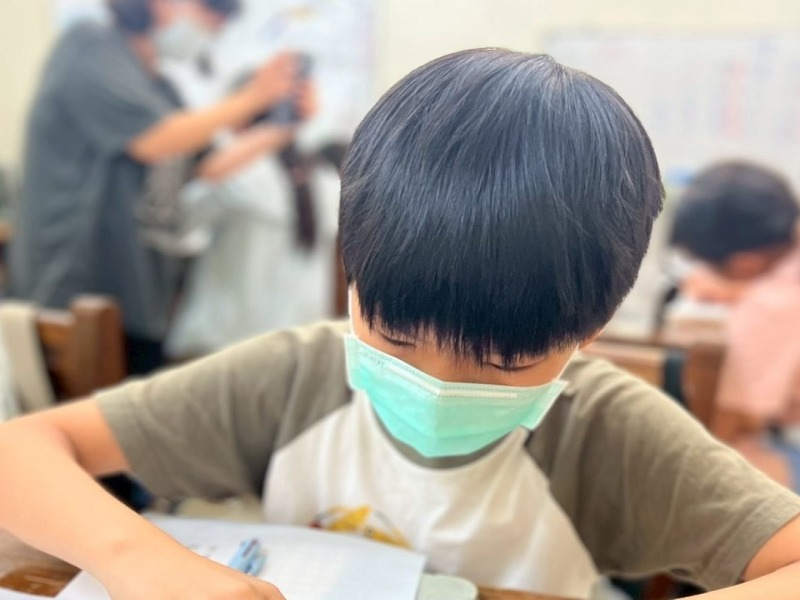

STAGE 01 · 奠基期
低年級（小一～小二）：常規養成、生活自理與握筆自信
🎯 階段核心任務：打破寫字拖延・告別落東落西・在小班關懷中建立「我做得到」的學習自信
⚠️ 現場真實痛點與家長焦慮
-
❗
注音符號拼讀與生字卡關
幼兒園到小一節奏突變，二聲三聲容易混淆，生字筆順與部首辨識困難，挫折感直接寫在臉上。 -
❗
握筆手酸、字體歪斜、擦破作業本
小手肌耐力尚未成熟，握筆姿勢不正確導致手部酸痛，字寫歪了又被反覆擦掉，演變成每晚的「功課大戰」。 -
❗
東西老是落東落西、放學容易玩瘋
橡皮擦鉛筆老是搞丟、水壺餐具留在學校、下課玩到收不回心，缺乏物品歸位與時間責任感。
💡 尚學現場專業陪伴解方
-
✅
番茄鐘分段引導・告別寫作業拖延
採用 15~20 分鐘專注引導節奏，將整疊作業拆解為小目標。寫完一段喝水休息，讓孩子在節奏感中養成定力。 -
✅
桌邊個別雕琢握筆姿勢與骨架重心
專任老師桌邊手把手指導三指握筆支點與筆順，字寫醜了不全擦掉，而是帶他找出哪一筆沒站穩，守護孩子的學習自尊。 -
✅
「放學三檢查」收納與生活自理常規
每天下課前 10 分鐘落實物品歸位訓練：檢查鉛筆盒、核對聯絡簿、收好明日書包，把負責任長進習慣裡。

1:15 小班耐心陪伴・為剛進小學的孩子溫柔托底
大班的孩子換了新環境往往焦慮無助。在尚學，一位專任老師只照顧最多 15 位孩子，能即時看見孩子的眼神困惑。每天放學到班，先喝口水、脫下書包，在溫暖安心的氛圍中一步步完成當日課業。
🌱 導師小提醒：小一前十週是習慣塑造的關鍵窗口。比起一味要求考 100 分，培養「坐得住、寫得穩、會收書包」的生活常規，才是受用一生的底氣。
STAGE 02 · 跨越期
中年級（小三～小四）：科目激增、作文起步與時間管理
🎯 階段核心任務：擺脫死記死背・學會心智圖抓重點・建立每日作業自主規劃能力
⚠️ 現場真實痛點與家長焦慮
-
❗
科目由 2 科暴增至 5 科，課業份量激增
新增自然、社會學科，在校整天課天數增加。傳統低年級的死記死背開始失靈，複習抓不到重點。 -
❗
作文寫作起步難，面對稿紙腦袋一片空白
學校開始要求寫數百字作文，孩子常寫兩句就卡關，語句口語化、流水帳，無法組織段落結構。 -
❗
接觸 3C 數位誘惑，放學時間管理混亂
開始想玩手機、看影片，寫功課摸魚分心，原本 1 小時的作業拖到晚上 9、10 點，家庭氣氛緊張。
💡 尚學現場專業陪伴解方
-
✅
心智圖（Mind Mapping）課文因果結構法
引導孩子用關鍵字樹狀圖整理社會地理歷史、自然實驗因果。不再死背課本，用理解建構長久記憶。 -
✅
5W1H 生活五感觀察・無痛寫作引導
打破「寫作文就是背佳句」的迷思，從生活經驗提問出發，先說再寫、理清脈絡，逐步架構起承轉合。 -
✅
每日作業清單自主排程訓練
到班第一件事：檢視聯絡簿、將作業按難易度排序。優先搞定專注科目，完成後享有充實放鬆時光。

從被動填鴨到主動思考・把讀書變成有成就感的事
中年級是孩子抽象思維啟蒙的分水嶺。在尚學，老師不直接給答案，而是透過啟發式提問：「這一段最重要的主角是誰？」、「如果把結果拿掉會怎樣？」，帶領孩子逐步理出知識的骨架。
🌿 導師小提醒：中年級孩子開始展現獨立意識，多給予自主排程的選擇權，少一點命令指責，孩子對課業的責任感就會自然萌芽。
STAGE 03 · 銜接期
高年級（小五～小六）：立體邏輯思考、長文閱讀與國中升學銜接
🎯 階段核心任務：攻克幾何邏輯難關・培養素養長文拆解力・接納青春期身心變化・平穩銜接國中
⚠️ 現場真實痛點與家長焦慮
-
❗
數學難度斷崖式躍升（立體圖形、體積容積計算）
展開圖、有蓋無蓋體積與容積、表面積計算、未知數代數思考。死記公式的孩子在中低年級考 95 分，此時常常慘跌至 70 分。 -
❗
素養題型長篇敘述理解障礙
題幹落落長跨領域，孩子常看不懂題目在問什麼，找不到已知數據與未知數的因果關聯，甚至直接放棄。 -
❗
青春期情緒波動・抗拒說教・國中焦慮
自尊心變強、情緒敏感、與同儕相處摩擦增加，對家長的說教產生強烈排斥感，同時對即將到來的國中生活感到迷茫。
💡 尚學現場專業陪伴解方
-
✅
空間幾何實物拆解與模型動手做
透過實體方塊、透明容積模型動手操作，將抽象公式回歸空間幾何本質，學會畫示意圖推導，而非死記公式。 -
✅
長文關鍵條件解構標記法
訓練孩子拿螢光筆圈出「已知條件」、「限制關鍵字」與「所求目標」，將複雜題型拆成 3 個清楚的運算步驟。 -
✅
亦師亦友的正向傾聽與國中銜接學力扎根
專任導師接納孩子的青春期情緒，建立深厚信任感；並提早安排國中核心文法與代數思考銜接，消除升學恐懼。

立體數感與深度閱讀・為國中升學打下最強定心丸
高年級的數學和語文考驗的是真正的「高階思維與空間感」。在尚學，我們透過小班精緻教學，確保每一個幾何幾何盲點都能當天搞懂，絕不讓問題累積到明天。
🌳 導師小提醒：高年級孩子需要的是「被尊重的對等溝通」。給予他們探討與提問的空間，孩子就能在成熟的思維中長出自主學習的大樹。
ENGLISH BRIDGING · 全年級貫穿
英語學習分階無痛銜接：從自然拼讀到英檢多益
🎯 學程理念：拒絕死背單字文法・循序漸進建立敢讀敢說的英語直覺
🔤
低年級：Phonics 自然拼讀打底
掌握字母與發音規則，看字能讀、聽音能拼。搭配生活常用高頻詞（Sight Words），無痛開啟英文繪本閱讀大門。
🗣️
中年級：生活情境會話與素養閱讀
融入主題式情境對話，鼓勵開口表達。透過短文閱讀擴充實用詞彙，告別單純硬背單字中文意思的無效學習。
🎯
高年級：文法結構精進與英檢銜接
系統化梳理時態、句型與長篇閱讀理解。平穩接軌國中段考標準，並為全民英檢（GEPT）與多益（TOEIC）做好實力儲備。
FREE LEARNING ASSESSMENT
給孩子一個更穩健、更自信的成長起點
每個年級都有獨特的挑戰，您不需要獨自焦慮！
歡迎預約到班進行「孩子學習習慣與學力程度一對一免費健檢」，由專任導師為您分析孩子的特質與進步關鍵。
※ 到班後導師將依孩子的學校年級與特質進行個別程度了解，為您量身規劃最合適的學習與作息安排。